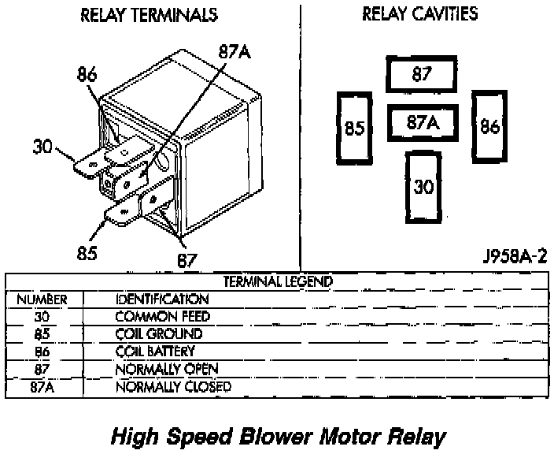

Blower Motor Relay: Testing and Inspection
High Speed Blower Motor Relay:

HIGH SPEED BLOWER MOTOR RELAY
RELAY TEST
For circuit descriptions and diagrams, refer to 8W-42 - Air Conditioning/Heater in Group 8W - Wiring Diagrams. Remove the relay from its wire harness connector as described in this group to perform the following tests:
1. A relay in the de-energized position should have continuity between terminals 87A and 30, and no continuity between terminals 87 and 30. If OK, go to Step 2. If not OK, replace the faulty relay
2. Resistance between terminals 85 and 86 (electromagnet) should be 75 ~ 5 ohms. If OK, go to Step 3. If not OK, replace the faulty relay.
3. Connect a battery to terminals 85 and 86. There should now be continuity between terminals 30 and 87, and no continuity between terminals 87A and 30. If OK, see the Relay Circuit Test in this group. If not OK, replace the faulty relay.
RELAY CIRCUIT TEST
1. The relay common feed terminal cavity (30) is connected to battery voltage and should be hot at all times. If OK, go to Step 2. If not OK, repair the open circuit to the Power Distribution Center (PDC) fuse as required.
2. The relay normally closed terminal (87A) is connected to terminal 30 in the de-energized position, but is not used for this application. Go to Step 3.
3. The relay normally open terminal (87) is connected to the common feed terminal (30) in the energized position. This terminal supplies battery voltage to the blower motor when the relay is energized by the ATC controller. There should be continuity between the cavity for relay terminal 87 and the high speed blower motor relay signal circuit cavity of the blower motor wire harness connector at all times. If OK, go to Step 4. If not OK, repair the open circuit to the blower motor as required.
4. The coil battery terminal (86) is connected to battery voltage and should be hot at all times. If OK, go to Step 5. If not OK, repair the open circuit to the PDC fuse as required.
5. The coil ground terminal (85) is connected to the electromagnet in the relay. It is grounded by the ATC controller when the blower switch is placed in the manual High blower speed position and/or when the ATC controller senses the need for High blower speed with the blower switch in the Hi Auto position. There should be continuity between the cavity for relay terminal 85 and the high speed blower motor relay control circuit cavity of the ATC controller wire harness connector at all times. If OK, see the ATC System tests in this group. If not OK, repair the open circuit as required.